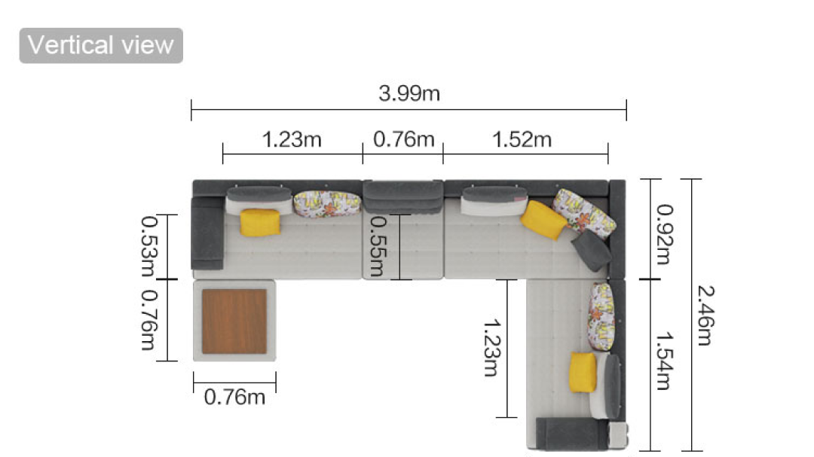

Ghế Sofa Gỗ Cao Su Tự Nhiên FURNICO. 601
1.Thông số kỹ thuật
2.Chi tiết vật liệu
Dante Hicks
"My friend here's trying to convince me that any independent contractors who were working on the uncompleted Death Star were innocent victims when it was destroyed by the Rebels."
 Các sản phẩm nội thất tại FURNICO. đa số đều được sản xuất tại nhà máy của công ty cổ phần xây dựng kiến trúc AA với đội ngũ nhân viên và công nhân ưu tú cùng cơ sở vật chất hiện đại (http://www.aacorporation.com/). FURNICO. đã kiểm tra kỹ lưỡng từ nguồn nguyên liệu cho đến sản phẩm hoàn thiện cuối cùng
Các sản phẩm nội thất tại FURNICO. đa số đều được sản xuất tại nhà máy của công ty cổ phần xây dựng kiến trúc AA với đội ngũ nhân viên và công nhân ưu tú cùng cơ sở vật chất hiện đại (http://www.aacorporation.com/). FURNICO. đã kiểm tra kỹ lưỡng từ nguồn nguyên liệu cho đến sản phẩm hoàn thiện cuối cùng
FURNICO. bảo hành một năm cho các trường hợp có lỗi về kỹ thuật trong quá trình sản xuất hay lắp đặt.
Quý khách không nên tự sửa chữa mà hãy báo ngay cho FURNICO. qua hotline: 1800 7200.
Sau thời gian hết hạn bảo hành, nếu quý khách có bất kỳ yêu cầu hay thắc mắc thì vui lòng liên hệ với FURNICO. để được hướng dẫn và giải quyết các vấn đề gặp phải.
TUY NHIÊN FURNICO. KHÔNG BẢO HÀNH CHO CÁC TRƯỜNG HỢP SAU:
Khách hàng tự ý sửa chữa khi sản phẩm bị trục trặc mà không báo cho FURNICO..
Sản phẩm được sử dụng không đúng quy cách của sổ bảo hành (được trao gửi khi quý khách mua sản phẩm) gây nên trầy xước, móp, dơ bẩn hay mất màu.
Sản phẩm bị biến dạng do môi trường bên ngoài bất bình thường (quá ẩm, quá khô, mối hay do tác động từ các thiết bị điện nước, các hóa chất hay dung môi khách hàng sử dụng không phù hợp).
Sản phẩm hết hạn bảo hành.
Sản phẩm không có phiếu bảo hành của FURNICO.
GIAO HÀNG TẬN NƠI
Khách hàng tự ý sửa chữa khi sản phẩm bị trục trặc mà không báo cho FURNICO..
FURNICO. cung cấp dịch vụ giao hàng tận nơi, lắp ráp và sắp xếp vị trí theo đúng ý muốn của quý khách:
- MIỄN PHÍ giao hàng trong các Quận nội thành Tp.Hồ Chí Minh và Hà Nội, áp dụng cho các đơn hàng trị giá trên 10 triệu.
- - Đối với khu vực các tỉnh lân cận: Tính phí hợp lý theo dựa trên quãng đường vận chuyển